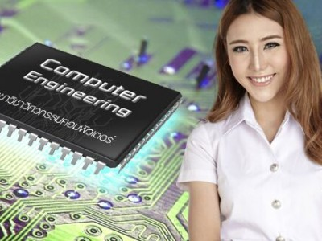

วิศวกรรมคอมพิวเตอร์
คือ วิศวกรรมคอมพิวเตอร์ (อังกฤษ: computer engineering) เป็นศาสตร์ที่เกี่ยวข้องกับการออกแบบและสร้างเครื่องหรือระบบคอมพิวเตอร์ และ ระบบที่ใช้คอมพิวเตอร์ ศาสตร์นี้เกี่ยวข้องกับการศึกษาทางด้านฮาร์ดแวร์ ซอฟต์แวร์ การสื่อสาร และความเกี่ยวเนื่องระหว่างเรื่องทั้งสาม หลักสูตรการเรียนมุ่งเน้นทางด้าน ทฤษฎี กฎ และ การฝึกฝนปฏิบัติของทางด้านวิศวกรรมไฟฟ้า และ คณิตศาสตร์ และวิทยาศาสตร์รวมถึงการประยุกต์เข้ากับปัญหาทางด้านการออกแบบคอมพิวเตอร์ และ อุปกรณ์ที่ใช้คอมพิวเตอร์
วิศวกรคอมพิวเตอร์ ศึกษาการออกแบบระบบฮาร์ดแวร์ดิจิทัล ซึ่งรวมถึงระบบการสื่อสาร องค์ประกอบของคอมพิวเตอร์ และอุปกรณ์ที่ประกอบด้วยคอมพิวเตอร์ วิศวกรคอมพิวเตอร์จะเรียนการพัฒนาซอฟต์แวร์ โดยมุ่งเน้นเกี่ยวกับซอฟต์แวร์สำหรับอุปกรณ์ดิจิทัล และ การสร้างส่วนต่อประสานระหว่างผู้ใช้งานซอฟต์แวร์ และ ระหว่างอุปกรณ์ต่าง ๆ รวมทั้งความรู้ทางด้านวิศวกรรมที่ดีด้วย
ปัจจุบันสาขาวิชาที่สำคัญในด้านวิศวกรรมคอมพิวเตอร์คือ ระบบฝังตัว การพัฒนาอุปกรณ์ที่มีซอฟต์แวร์และฮาร์ดแวร์ฝังตัวภายใน เช่น อุปกรณ์สื่อสารอย่าง โทรศัพท์มือถือ เครื่องเล่นวิทยุระบบดิจิทัล เครื่องบันทึกวีดิทัศน์ระบบดิจิทัล ระบบเตือนภัย เครื่องถ่ายรังสีเอกซ์ และ เครื่องมือผ่าตัดด้วยแสงเลเซอร์เป็นต้น ซึ่งล้วนแล้วแต่ต้องการการผนวกรวมฮาร์ดแวร์และซอฟต์แวร์ฝังตัวหรือของอื่น ๆ ที่เป็นผลจากการวิศวกรรมคอมพิวเตอร์เข้าด้วยกัน

.jpg)